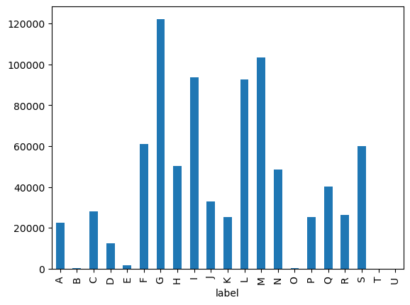

# Install required libraries for Onyxia environment
#!pip install openai
#!pip install openpyxl
#!pip install matplotlibLLM-based synthetic data generation
The goal of this notebook is to explain how to use LLMs for synthetic data generation, especially in the context of statistical classifications. This is an important step towards training a classifier, since it helps to mitigate some problems with real-world data like scarcity, mislabelling and data gaps. Moreover, as we will see, this strategy allows us to significantly improve the performance of classifiers using few resources. An implementation of a full pipeline, together with documentation and a jupyter notebook tutorial, can be seen in https://github.com/AIML4OS/WP10_Cluster1_StatCodGen#
import pandas as pd
import openai #for LLMs calls1. Why do we need synthetic data?
Real-world data for training classifiers for statistical classifications have several issues: - Statistical classifications are very complex and have lots of nuances and caveats, so it is not always clear how to classify a given text. - Sometimes data is annotated by non-experts, which lead to mistakes. - Some texts are ambiguous, meaning that there is not enough information to reliably classify them in one class. - Some classes are hugely underrepresented in real-world data (by the structure of the economy), so it can be difficult to obtain enough samples for that data.
Moreover, obtaining more real-world data is usually a very resource-expensive task. However, nowadays we have at our disposal the generative capabilities of LLMs, which produce text which is nearly indistinguishable from human-produced text. We can exploit this to generate as many real-looking samples as we want very quickly and in a completely automated way.
Empirically it has been observed that mixing real-world data with good-quality synthetic data improves substantially the accuracy of the classification models.
2. Reading the data
2.1 Sample data
Here we read the real-world sample data available to train the model and do some easy explanatory analysis to check class coverage.
df = pd.read_parquet(
"https://minio.lab.sspcloud.fr/projet-formation/diffusion/mlops/data/firm_activity_data.parquet"
)
df.head()| nace | text | |
|---|---|---|
| 0 | 8220Z | MISSIONS PONCTUELLES A L AIDE D UNE PLATEFORME |
| 1 | 8553Z | INSPECTEUR AUTOMOBILE |
| 2 | 5520Z | LA LOCATION TOURISTIQUE DE LOGEMENTS INSOLITES... |
| 3 | 4791A | COMMERCE DE TOUT ARTICLES ET PRODUITS MARCHAND... |
| 4 | 9499Z | REGROUPEMENT RETRAITE |
nace_2digit_to_section = {
# Section A: Agriculture, forestry and fishing
"01": "A", "02": "A", "03": "A",
# Section B: Mining and quarrying
"05": "B", "06": "B", "07": "B", "08": "B", "09": "B",
# Section C: Manufacturing
"10": "C", "11": "C", "12": "C", "13": "C", "14": "C",
"15": "C", "16": "C", "17": "C", "18": "C", "19": "C",
"20": "C", "21": "C", "22": "C", "23": "C", "24": "C",
"25": "C", "26": "C", "27": "C", "28": "C", "29": "C",
"30": "C", "31": "C", "32": "C", "33": "C",
# Section D: Electricity, gas, steam and air conditioning supply
"35": "D",
# Section E: Water supply; sewerage, waste management and remediation
"36": "E", "37": "E", "38": "E", "39": "E",
# Section F: Construction
"41": "F", "42": "F", "43": "F",
# Section G: Wholesale and retail trade
"45": "G", "46": "G", "47": "G",
# Section H: Transportation and storage
"49": "H", "50": "H", "51": "H", "52": "H", "53": "H",
# Section I: Accommodation and food service activities
"55": "I", "56": "I",
# Section J: Information and communication
"58": "J", "59": "J", "60": "J", "61": "J", "62": "J", "63": "J",
# Section K: Financial and insurance activities
"64": "K", "65": "K", "66": "K",
# Section L: Real estate activities
"68": "L",
# Section M: Professional, scientific and technical activities
"69": "M", "70": "M", "71": "M", "72": "M", "73": "M", "74": "M", "75": "M",
# Section N: Administrative and support service activities
"77": "N", "78": "N", "79": "N", "80": "N", "81": "N", "82": "N",
# Section O: Public administration and defence
"84": "O",
# Section P: Education
"85": "P",
# Section Q: Human health and social work activities
"86": "Q", "87": "Q", "88": "Q",
# Section R: Arts, entertainment and recreation
"90": "R", "91": "R", "92": "R", "93": "R",
# Section S: Other service activities
"94": "S", "95": "S", "96": "S",
# Section T: Activities of households as employers
"97": "T", "98": "T",
# Section U: Activities of extraterritorial organizations
"99": "U"
}df['label'] = df['nace'].apply(lambda x: x[:2]).map(nace_2digit_to_section)
df.head()| nace | text | label | |
|---|---|---|---|
| 0 | 8220Z | MISSIONS PONCTUELLES A L AIDE D UNE PLATEFORME | N |
| 1 | 8553Z | INSPECTEUR AUTOMOBILE | P |
| 2 | 5520Z | LA LOCATION TOURISTIQUE DE LOGEMENTS INSOLITES... | I |
| 3 | 4791A | COMMERCE DE TOUT ARTICLES ET PRODUITS MARCHAND... | G |
| 4 | 9499Z | REGROUPEMENT RETRAITE | S |
# Add all possible labels
all_labels = sorted(list(set(nace_2digit_to_section.values())))
all_labels # From A to U['A',
'B',
'C',
'D',
'E',
'F',
'G',
'H',
'I',
'J',
'K',
'L',
'M',
'N',
'O',
'P',
'Q',
'R',
'S',
'T',
'U']df['label'] = pd.Categorical(df['label'], categories = all_labels)
df['label'].value_counts()label
G 122216
M 103344
I 93743
L 92525
F 61098
S 60125
H 50241
N 48516
Q 40265
J 32783
C 28091
R 26212
K 25289
P 25269
A 22429
D 12550
E 1655
O 161
B 129
U 11
T 0
Name: count, dtype: int64df['label'].value_counts().sort_index().plot(kind='bar')
We see that some sections, particularly O, B and U have very few training samples. Moreover there are no samples for section T. We are going to generate samples for these sections. To obtain the best results, it is important to generate samples at the most disaggregated level (class) and then aggregate them to the desired level. In this way we can leverage all the information contained in the explanatory notes.
2.2 Explanatory notes
We will use the information in the explanatory notes of the statistical classification (NACE in this case) in order to provide the necessary information to the LLM to generate new samples. Explanatory notes contain a lot of high-quality information for each class of the statistical classifcation. Typically the information provided consists of: - Code of the class - Title of the class - Includes: a description of activities included in this class. - Also includes: a description of some activities which are also included in this class. - Not includes: a description of some activities which are not included in the class, but are related to activities which are included.
In order to use the information contained in the explanatory notes in an easy way it is convenient to prepare them in a machine-readable format, following the above categories. This can be done in formats like XML or JSON, or simply in an excel or csv file. In this case we have prepared an excel file with the information contained in the NAF notes. At Statistics Spain we provide an excel file with this information (https://www.ine.es/daco/daco42/clasificaciones/cnae25/notas_explicativas_CNAE_2025.xlsx)
NAFnotes = pd.read_excel("NAFclasses.xlsx", keep_default_na=False)
NAFnotes.head()| Section | Code | Title | Includes | Also includes | Not includes | |
|---|---|---|---|---|---|---|
| 0 | A | 01.11Y | Culture de céréales, à l'exception du riz, de... | Cette sous-classe comprend toutes les formes d... | Cette sous-classe ne comprend pas : - la cultu... | |
| 1 | A | 01.12Y | Culture du riz | Cette sous-classe comprend : - la culture du riz | ||
| 2 | A | 01.13Y | Culture de légumes, de melons, de racines et ... | Cette sous-classe comprend : - la culture de l... | Cette sous-classe comprend également : - la cu... | Cette sous-classe ne comprend pas : - la cultu... |
| 3 | A | 01.14Y | Culture de la canne à sucre | Cette sous-classe ne comprend pas : - la cultu... | ||
| 4 | A | 01.15Y | Culture du tabac | Cette sous-classe comprend : - la culture de t... | Cette sous-classe comprend également : - la pr... | Cette sous-classe ne comprend pas : - la prépa... |
3. Generation of synthetic data
Our strategy is based on the paper ZeroGen (https://arxiv.org/abs/2202.07922). The idea is simple but extremely powerful: we leverage the generative abilities of LLMs to generate plausible samples (similar to real-world samples) for generating synthetic samples from the high-quality information contained in the explanatory notes.
We want to generate synthetic samples following two fundamental principles: - Faithfulness: the generated samples should be correctly coded and should be relevant to the problem at hand. - Diversity: the generated samples should display enough variety, both in style and content.
In this section, we will first explain how to setup an LLM API to make calls via Python, and then show how we can implement a simple data generation strategy using LLMs in an automated way. In order to generate faithful samples for each class, we need to provide the LLM with precise information, which we take from the class description in the explanatory notes. Even though in this tutorial we will develop classifiers at the section level, we will generate samples at the most disaggregated level. In general, even if we are interested in classifying at an aggregated level, it is useful to generate always the samples at the most disaggregated level, and later aggregate, in order to take full advantage of the explanatory notes and to get the maximum possible diversity of samples.
3.1 Setting up the LLM API
First, we show how to set up an LLM API. There are essentially two ways to use an LLM: locally or remotely. Both have advantages and disadvantages: - Local LLMs: uses an LLM which is directly run in our computer (or the organization servers). Using an LLM locally allow us to have complete control over the LLM and avoids cost and security concerns. However, our organization needs the adequate hardware (GPUs), especially for the larger models. We are limited to use only open-source models (excluding e.g. most of OpenAI models). Setting up the LLM for local use involves some extra steps before we can access it via an API. Fortunately, nowadays there is software which makes this step very easy, like Ollama or vLLM. - Remote LLMs: uses an LLM which runs in remote servers, typically in the premises of the provider of the model (OpenAI, Meta, Microsoft, …). The advantages are that they are easier to set up and use, allow us to run very large models without having to care about computing resources, and allow us to run closed-source models like most of OpenAI models. The disadvantages are the costs (each API call costs a quantity of money), security concerns, and less control over the models (they can update a model or discontinue it).
In this tutorial we will use for simplicity a remote provider, Groq (do not confuse with Grok, the family of xAI models), which has the advantage of allowing some free tokens and which is the provider we have used at Statistics Spain.
Groq uses the OpenAI API to make the calls to the LLMs. Therefore, we must make sure we include the line: import openai in our code. The next step is to log in (or create an account) at the Groq website: https://groq.com/ , go to “API Keys” and click on “Create API key”. After introducing a name the key will be created. We must copy the key and put it in a python variable:
API_KEY='<INSERT_API_KEY_HERE>'Now to set up the client we execute the next chunk of code:
# Preparing Groq API
client = openai.OpenAI(
api_key=API_KEY,
base_url="https://api.groq.com/openai/v1"
)We now can use the models provided by Groq. To do it we use the next code, giving it a prompt:
# Groq call
response = client.responses.create(
model="llama-3.3-70b-versatile", # model we want to use
input="Hi! How are you?", # prompt
)It returns us a Response object, which contains all the information of the LLM call. Here we will only be interested in the output of the model, which can be accessed as follows:
response.output_text"Hello. I'm doing well, thanks for asking. I'm a large language model, so I don't have feelings or emotions like humans do, but I'm functioning properly and ready to assist you with any questions or tasks you may have. How about you? How's your day going?"3.2 Data generation from the explanatory notes
We use the explanatory notes of the statistical classification in order to generate new samples. Since the explanatory notes are a high-quality source, we expect that there are few mislabelled samples in the generated samples. Indeed, empirically it has been verified that the synthetic data generated in this way generally contains much less mistakes than real-world data.
Our strategy for data generation will consist in constructing a generic prompt, which can be easily adapted to each class, that includes the title of the class and the relevant information from the explanatory notes, and then pass this prompt to an LLM which will generate the desired number of samples.
In order to obtain the best possible results it is important to construct the prompt carefully. While this is a highly empirical task, there are some guidelines which have proven to be universally useful (see, for instance, Section 3.1 of https://arxiv.org/abs/2406.15126v1). A well-constructed prompt should consist of the following parts: - Task specification: A description of the task the LLM must fulfill. A prologue to set the scene, such as “You are an expert in training data generation for classification models” often improves performance. - Conditions: The conditions and instructions the LLM must follow in the generation task. - In-context examples: Examples of the expected output. This has been observed to provide a huge performance improvement.
def generate_prompt(root, text, number):
prompt_process_notes = (
"Vous êtes un expert en génération de données d'entraînement pour les modèles de classification.\n "
"Votre tâche consiste à prendre une phrase racine d'une activité économique générale et à générer des phrases d'entraînement à partir d'exemples concrets inclus dans un texte.\n "
"Le cas échéant, essayez d'introduire le mot 'autre' ou 'autre' ainsi que l'utilisation ou la destination du produit.\n "
"Chaque fois qu'un objet est fabriqué, incluez le matériau à partir duquel il est fait.\n "
"Évitez de produire des phrases complètement différentes ou changeant de contexte et ne retournez QUE des phrases sans introduction, commentaire, explication ou phrase supplémentaire.\n "
"Évitez d'introduire vos résultats par des phrases telles que 'voici les phrases générées' ou similaires.\n "
"Écrivez chaque phrase sur une ligne séparée.\n "
"Écrivez tout en majuscules.\n "
"Ne mets pas de point à la fin de la phrase.\n "
"Je veux utiliser votre résultat directement, donc je veux UNIQUEMENT les phrases.\n "
"Voici un exemple :\n "
"Racine : Production de produits de boulangerie et de confiserie.\n "
"Texte : Cette classe comprend la fabrication de tous les produits de boulangerie tels que : pains, gâteaux, autres farines et pains destinés à l'alimentation animale.\n "
"Sortie :\n "
"FABRICATION DE MICHES DE PAIN\n "
"PRODUCTION DE PAIN POUR ANIMAUX\n "
"PRODUCTION DE GÂTEAUX\n "
"PRODUCTION D'AUTRES FARINES\n "
f"Maintenant vous le faites avec la racine et le texte suivants, en générant {number} phrases:\n "
f"Racine: {root}.\n "
f"Texte: {text}."
)
return prompt_process_notesFirst we see how it works in one specific case, step by step. We will use subclass 25.11Y.
prompt = generate_prompt("Fabrication de structures métalliques et de parties de structures",
"""Cette sous-classe comprend :
- la fabrication de cadres métalliques ou d’ossatures pour la construction et de leurs éléments
(tours, pylônes en treillis, armatures, ponts, éléments de ponts, etc.)
- la fabrication de matériel d'échafaudage, de coffrage ou d'étayage
- la fabrication de cadres métalliques pour équipements industriels (cadres pour hauts fourneaux,
matériels de manutention, etc.)
- la fabrication de constructions préfabriquées principalement en métaux :
• baraques de chantier, éléments modulaires pour expositions, etc.
""",
10)
print(prompt)Vous êtes un expert en génération de données d'entraînement pour les modèles de classification.
Votre tâche consiste à prendre une phrase racine d'une activité économique générale et à générer des phrases d'entraînement à partir d'exemples concrets inclus dans un texte.
Le cas échéant, essayez d'introduire le mot 'autre' ou 'autre' ainsi que l'utilisation ou la destination du produit.
Chaque fois qu'un objet est fabriqué, incluez le matériau à partir duquel il est fait.
Évitez de produire des phrases complètement différentes ou changeant de contexte et ne retournez QUE des phrases sans introduction, commentaire, explication ou phrase supplémentaire.
Évitez d'introduire vos résultats par des phrases telles que 'voici les phrases générées' ou similaires.
Écrivez chaque phrase sur une ligne séparée.
Écrivez tout en majuscules.
Ne mets pas de point à la fin de la phrase.
Je veux utiliser votre résultat directement, donc je veux UNIQUEMENT les phrases.
Voici un exemple :
Racine : Production de produits de boulangerie et de confiserie.
Texte : Cette classe comprend la fabrication de tous les produits de boulangerie tels que : pains, gâteaux, autres farines et pains destinés à l'alimentation animale.
Sortie :
FABRICATION DE MICHES DE PAIN
PRODUCTION DE PAIN POUR ANIMAUX
PRODUCTION DE GÂTEAUX
PRODUCTION D'AUTRES FARINES
Maintenant vous le faites avec la racine et le texte suivants, en générant 10 phrases:
Racine: Fabrication de structures métalliques et de parties de structures.
Texte: Cette sous-classe comprend :
- la fabrication de cadres métalliques ou d’ossatures pour la construction et de leurs éléments
(tours, pylônes en treillis, armatures, ponts, éléments de ponts, etc.)
- la fabrication de matériel d'échafaudage, de coffrage ou d'étayage
- la fabrication de cadres métalliques pour équipements industriels (cadres pour hauts fourneaux,
matériels de manutention, etc.)
- la fabrication de constructions préfabriquées principalement en métaux :
• baraques de chantier, éléments modulaires pour expositions, etc.
.# Groq call
response = client.responses.create(
model="llama-3.3-70b-versatile",
input=prompt,
)response.output_text.split('\n')['FABRICATION DE CADRES MÉTALLIQUES POUR CONSTRUCTION',
'FABRICATION DE TOURS EN MÉTAUX POUR SUPPORT',
"FABRICATION DE PYLÔNES EN TREILLIS POUR DISTRIBUTION D'ÉNERGIE",
'FABRICATION DE PONT EN MÉTAUX DESTINÉ À LA CIRCULATION',
"FABRICATION DE MATÉRIEL D'ÉCHAFAUDAGE EN MÉTAUX POUR CONSTRUCTION",
'FABRICATION DE COFFRAGE EN MÉTAUX POUR BÉTONNAGE',
'FABRICATION DE CADRES MÉTALLIQUES POUR ÉQUIPEMENTS INDUSTRIELS',
'FABRICATION DE BARAQUES DE CHANTIER EN MÉTAUX POUR STOCKAGE',
"FABRICATION D'ÉLÉMENTS MODULAIRES EN MÉTAUX POUR EXPOSITION",
'FABRICATION DE STRUCTURES PRÉFABRIQUÉES EN MÉTAUX POUR CONSTRUCTION']Now we can prepare, following the same steps, a general function that generates samples for a given class in an automatic fashion:
def generate_samples(NAFclass, num_samples, notes = NAFnotes):
class_notes = NAFnotes[NAFnotes['Code']== NAFclass].iloc[0]
# 1. Generate the prompt
if class_notes['Includes']:
prompt = generate_prompt(class_notes['Title'], class_notes['Includes'], num_samples)
else: # If includes section is empty
prompt = generate_prompt(class_notes['Title'], class_notes['Title'], num_samples)
# 2. Generate samples by calling Groq API
response = client.responses.create(
model="llama-3.3-70b-versatile",
input=prompt,
)
samples = response.output_text.split('\n')
return pd.DataFrame({'text':samples, 'class':NAFclass})NAFclass = '25.11Y'
generate_samples(NAFclass, 10, notes = NAFnotes)| text | class | |
|---|---|---|
| 0 | FABRICATION DE CADRES MÉTALLIQUES POUR CONSTRU... | 25.11Y |
| 1 | CONSTRUCTION DE TOURS MÉTALLIQUES À PARTIR DE... | 25.11Y |
| 2 | PRODUCTION DE PYLÔNES EN TREILLIS EN MÉTAUX | 25.11Y |
| 3 | FABRICATION DE MATÉRIEL D'ÉCHAFAUDAGE EN MÉTAUX | 25.11Y |
| 4 | PRODUCTION DE COFFRAGE EN MÉTAUX POUR CONSTRU... | 25.11Y |
| 5 | CONSTRUCTION DE PONT EN MÉTAUX POUR TRANSPORT | 25.11Y |
| 6 | FABRICATION DE CADRES MÉTALLIQUES POUR HAUTS ... | 25.11Y |
| 7 | PRODUCTION D'AUTRES STRUCTURES MÉTALLIQUES PO... | 25.11Y |
| 8 | FABRICATION DE BARAQUES DE CHANTIER EN MÉTAUX... | 25.11Y |
| 9 | CONSTRUCTION D'ÉLÉMENTS MODULAIRES EN MÉTAUX ... | 25.11Y |
Finally, we can generate a function for generating synthetic samples for a given section. The strategy is to generate some examples for each of the classes contained in the section using our previous function, and the put everything together.
def generate_samples_section(section, num_samples, notes = NAFnotes):
samples_df = pd.DataFrame()
classes = notes[notes['Section'] == section]['Code'] # Select classes of the given section from the notes
num_classes = len(classes) # Number of classes in the given section
# For each class generate samples and concatenate with the samples already generated.
# We generate int(num_samples/num_classes)+1 samples for each class in the section,
# so in total we get approx num_samples for the section.
for NAFclass in classes:
samples_df = pd.concat([samples_df, generate_samples(NAFclass, int(num_samples/num_classes)+1, notes)])
samples_df['label']=section # Add the section as label
return samples_dfsamplesT = generate_samples_section('T', 50)samplesT.head()| text | class | label | |
|---|---|---|---|
| 0 | ACTIVITÉS DES MÉNAGES EN TANT QU'EMPLOYEURS DE... | 97.00Y | T |
| 1 | EMPLOI DE PERSONNEL DE MAISON POUR LES TÂCHES... | 97.00Y | T |
| 2 | GESTION DU PERSONNEL DOMESTIQUE DANS LES MÉNAGES | 97.00Y | T |
| 3 | EMPLOI DE GOUVERNANTES POUR L'ÉDUCATION DES E... | 97.00Y | T |
| 4 | EMPLOI DE PERSONNEL DE NETTOYAGE POUR LES MÉN... | 97.00Y | T |
Here we will generate 200 samples for each of the four less represented sections (B, O, T, U). We can do it in the following way:
synthetic_df = pd.concat([generate_samples_section(section, 200) for section in ['O','B','U','T']])synthetic_df| text | class | label | |
|---|---|---|---|
| 0 | GESTION DE L'ADMINISTRATION PUBLIQUE CENTRALE | 84.11Y | O |
| 1 | ADMINISTRATION DE L'EXECUTIF ET DU LEGISLATIF ... | 84.11Y | O |
| 2 | ACTIVITES DES MINISTÈRES NATIONAUX | 84.11Y | O |
| 3 | ADMINISTRATION DES AFFAIRES FISCALES LOCALES | 84.11Y | O |
| 4 | MISE EN ŒUVRE DES RÉGIMES FISCAUX NATIONALS | 84.11Y | O |
| ... | ... | ... | ... |
| 73 | PRODUCTION DE SERVICES DE GESTION DES PROCEDUR... | 98.20Y | T |
| 74 | REALISATION DE SERVICES DE GESTION DES POLITIQ... | 98.20Y | T |
| 75 | PRODUCTION DE SERVICES DE GESTION DES NORMES P... | 98.20Y | T |
| 76 | PRESTATION DE SERVICES DE GESTION DES REGLEMEN... | 98.20Y | T |
| 77 | PRODUCTION D'AUTRES SERVICES DESTINÉS À LA SUB... | 98.20Y | T |
2462 rows × 3 columns
synthetic_df = synthetic_df.drop(columns=['class'])synthetic_df.to_csv("synthetic_df.csv", index=False)3.3 Some ideas for further improvement
We have seen an example of a basic generation strategy. However, there is plenty of research to be done in this direction, and there are lots of experiments one can perform. Here we just give some ideas or suggestions that one could try: - Prompt engineering. Try different prompt structures or variations. Try giving examples for each class instead of using the same generic example for all classes. - Improve diversity of samples by asking an LLM to generate it in different styles (longer, shorter, with ortographical errors, etc). - Improve further the diversity by asking several distinct LLMs to produce samples. - Use not just the “Includes” section of the explanatory notes, but also the “Also includes” and the “Not included” section. - Exploit the hierarchical structure of the classification in the prompt, giving not only information about the class but also the higher groups. - Data curation: improve the quality of the generated samples by including a process of filtering (by humans or by another LLM). - Evaluation of the synthetic dataset: both direct (measuring the quality of the data generated) and indirect (evaluation of the classifiers trained/fine-tuned with the synthetic data).